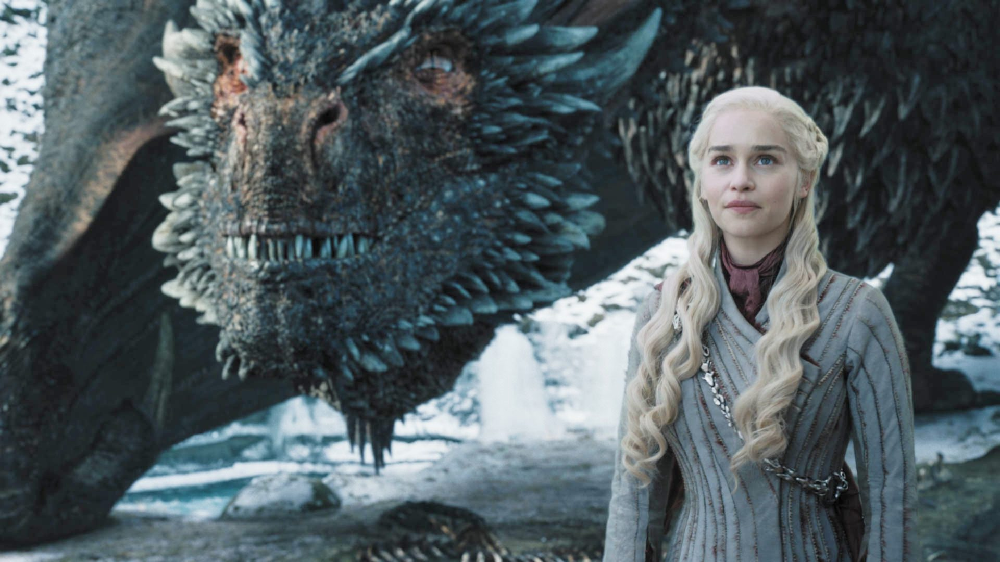

Tác giả 'Trò chơi vương quyền' George R.R.Martin ấn định lịch xuất bản sách mới
Nhà văn George R.R.Martin ấn định lịch xuất bản của quyển tiểu thuyết thứ 6 trong loạt truyện A Song of Ice and Fire (tạm dịch: Khúc ca của Băng và Lửa) là vào năm 2021.
Dịch bệnh Covid-19 khiến cho tốc độ sáng tác truyện của nhà văn George R.R.Martin ngày càng chậm đi. Bằng chứng là phần thứ 6 của loạt truyện A Song of Ice and Fire là The Winds of Winter (Những cơn gió mùa đông) trong 9 năm qua vẫn chưa thể ra mắt khán giả. Thế nhưng mới đây, nhà văn lão làng viết trên blog cá nhân rằng năm 2021 ông sẽ cho ra mắt quyển sách thứ 6 sau bao năm khiến người hâm mộ chờ đợi.
Theo chia sẻ từ cây bút 72 tuổi, dịch bệnh Covid-19 khiến tiến độ sáng tác, xuất bản của ông bị ảnh hưởng. Thế nhưng chính điều đó cũng tạo cơ hội thuận lợi cho ông. Tờ Variety hé lộ, nhà văn đã nhốt mình nhiều tháng ròng ở một cabin trên núi để tập trung cho quyển tiểu thuyết chiến tranh, hư cấu mới nhất.
Nhà văn bộc bạch: "Việc cách ly đã hối thúc tôi viết. Tôi đã viết liên tục trong nhiều giờ mỗi ngày đối với bản thảo The Winds of Winter. Đó là một tiến trình sáng tác đều đặn". The Winds of Winter là dự án tham vọng của George R.R.Martin trong việc dắt tay độc giả đi đến gần hơn cái kết của một trong những series truyện giả tưởng ăn khách bậc nhất phương Tây này. Theo sau The Winds of Winter, quyển thứ 7 của loạt truyện A Song of Ice and Fire là A Dream of Spring (Giấc mơ xuân) cũng đang được ông gấp rút hoàn thành.

Không chỉ việc hướng đến cái kết của loạt truyện trường thiên A Song of Ice and Fire, tác giả George R. R.Martin đã cố gắng kể một câu chuyện riêng biệt từ loạt truyện này mang tên Fire & Blood
Nhiều độc giả mong ngóng George R.R.Martin sẽ kết loạt truyện A Song of Ice and Fire hợp lý bởi vì loạt phim chuyển thể dựa trên tác phẩm của ông là A Game of Thrones (Trò chơi vương quyền) có cái kết gây thất vọng. Thương hiệu phim truyền hình đình đám của nhà đài HBO này phát từ năm 2011 và kết thúc vào năm 2019 vừa qua với 8 mùa. Ở 7 mùa đầu, hai nhà biên kịch David Benioff và D. B. Weiss dựa vào truyện của George R.R.Martin để làm phim nhưng mùa cuối cùng lại không như vậy dẫn đến việc kết phim thiếu thuyết phục. Sau loạt phim, nhà đài HBO tiếp tục phát triển loạt phim tiền truyện của Trò chơi vương quyền là The House of the Dragon (Nhà của Rồng) cũng được chuyển thể từ tác phẩm riêng lẻ do chính George R.R.Martin sáng tác là Fire & Blood (Lửa và Máu).
Variety nhấn mạnh bộ sách Fire & Blood cho thấy George R.R.Martin có một tham vọng khác là mở rộng tối đa thế giới hư cấu mà mình đã tạo ra, tất cả đều đang được hoàn thành. Nếu The Winds of Winter và A Dream of Spring đang trong giai đoạn nước rút để đưa vào xưởng in thì Fire & Blood mới xuất bản quyển đầu, quyển thứ hai không biết đến bao giờ mới hoàn thành.